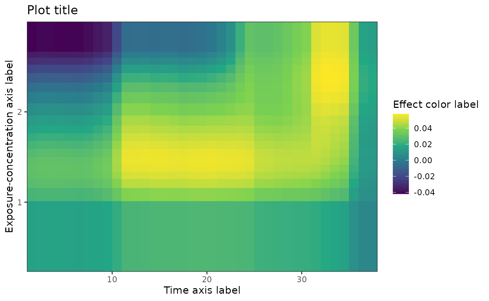
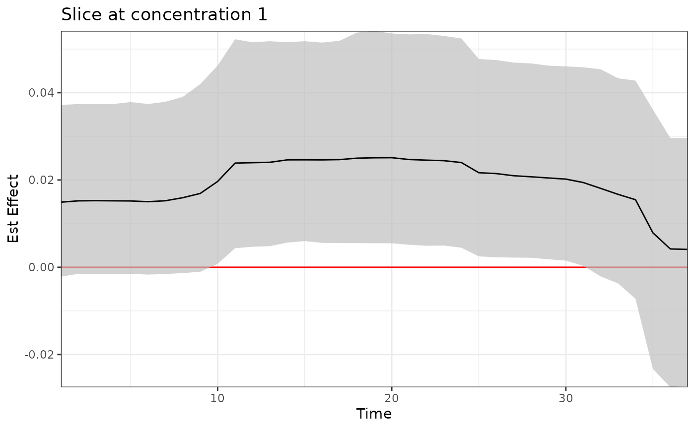
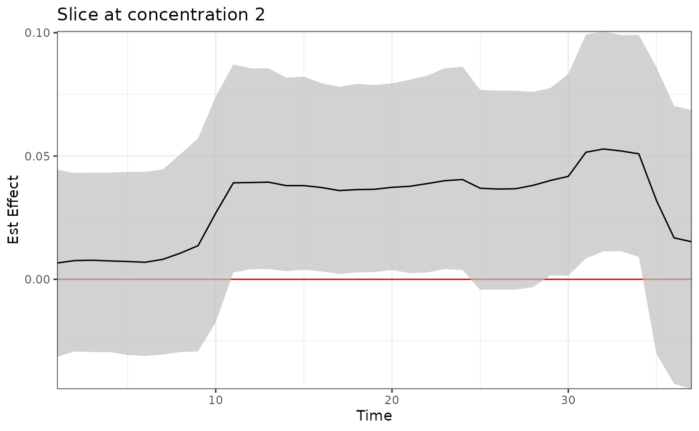
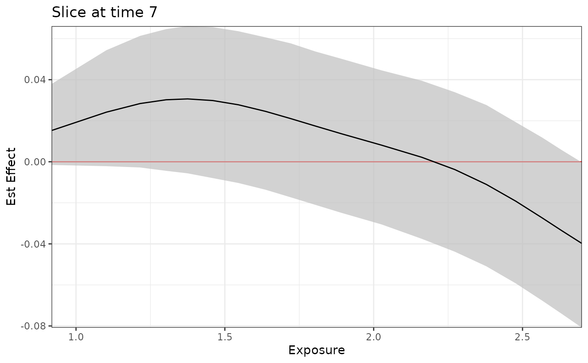
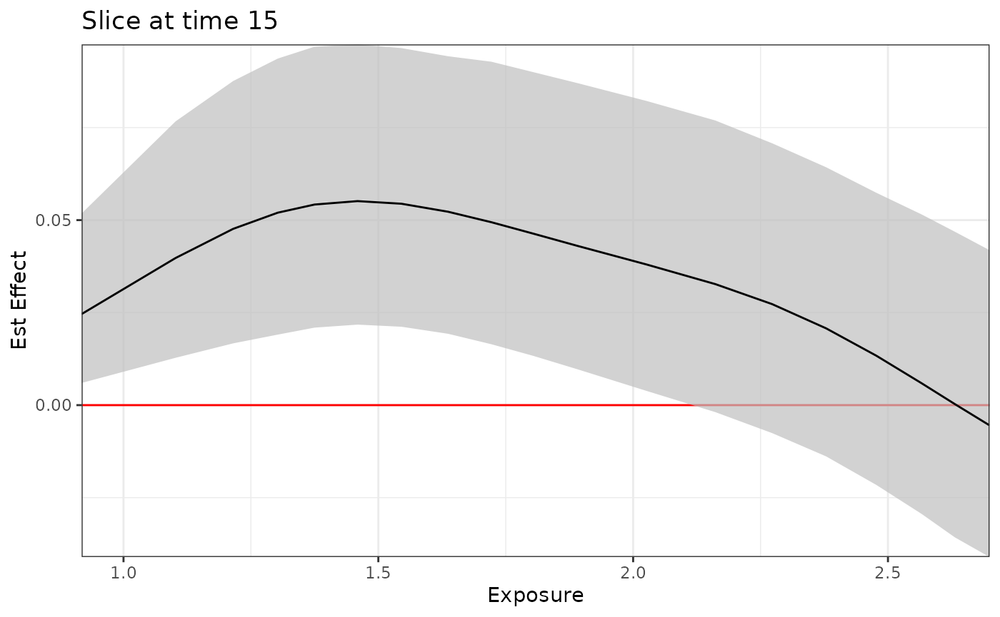
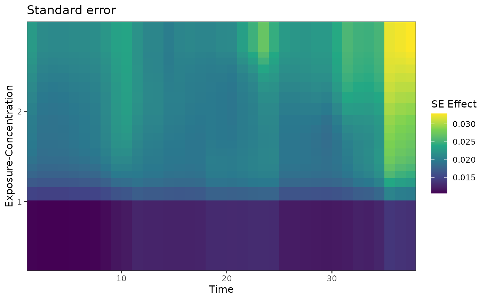
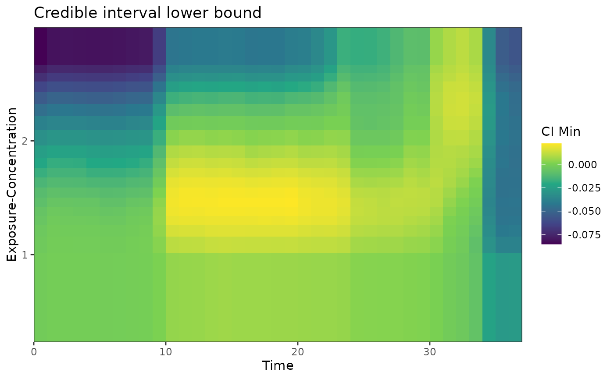
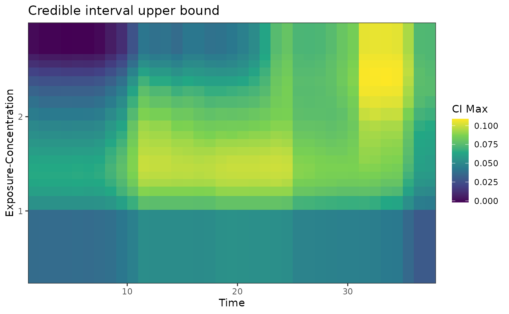
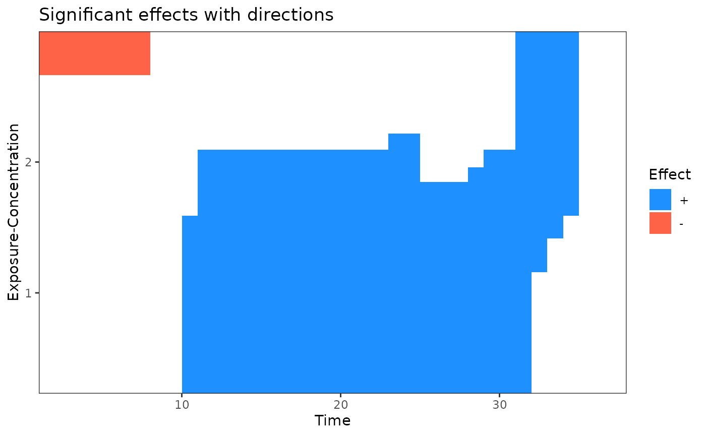

This vignette demonstrates the implementation of treed distributed lag non-linear model (TDLNM). More details can be found in Mork and Wilson (2021) <doi: 10.1093/biostatistics/kxaa051>.
Load data
Simulated data is available on GitHub. It can be loaded with the following code.
sbd_dlmtree <- get_sbd_dlmtree()Data preparation
# Response and covariates
sbd_cov <- sbd_dlmtree %>%
select(bwgaz, ChildSex, MomAge, GestAge, MomPriorBMI, Race,
Hispanic, MomEdu, SmkAny, Marital, Income,
EstDateConcept, EstMonthConcept, EstYearConcept)
# Exposure data
sbd_exp <- list(PM25 = sbd_dlmtree %>% select(starts_with("pm25_")),
TEMP = sbd_dlmtree %>% select(starts_with("temp_")),
SO2 = sbd_dlmtree %>% select(starts_with("so2_")),
CO = sbd_dlmtree %>% select(starts_with("co_")),
NO2 = sbd_dlmtree %>% select(starts_with("no2_")))
sbd_exp <- sbd_exp %>% lapply(as.matrix)Fitting the model
tdlnm.fit <- dlmtree(formula = bwgaz ~ ChildSex + MomAge + MomPriorBMI +
Race + Hispanic + SmkAny + EstMonthConcept,
data = sbd_cov,
exposure.data = sbd_exp[["TEMP"]],
dlm.type = "nonlinear",
family = "gaussian",
control.tdlnm = list(exposure.splits = 20),
control.mcmc = list(n.burn = 2500, n.iter = 10000, n.thin = 5))
#> Preparing data...
#>
#> Running TDLNM:
#> Burn-in % complete
#> [0--------25--------50--------75--------100]
#> ''''''''''''''''''''''''''''''''''''''''''
#> MCMC iterations (est time: 24 seconds)
#> [0--------25--------50--------75--------100]
#> ''''''''''''''''''''''''''''''''''''''''''
#> Compiling results...Model fit summary
tdlnm.sum <- summary(tdlnm.fit)
#> Centered DLNM at exposure value 0
print(tdlnm.sum)
#> ---
#> TDLNM summary
#>
#> Model run info:
#> - bwgaz ~ ChildSex + MomAge + MomPriorBMI + Race + Hispanic + SmkAny + EstMonthConcept
#> - sample size: 10,000
#> - family: gaussian
#> - 20 trees
#> - 2500 burn-in iterations
#> - 10000 post-burn iterations
#> - 5 thinning factor
#> - exposure measured at 37 time points
#> - 0.95 confidence level
#>
#> Fixed effect coefficients:
#> Mean Lower Upper
#> (Intercept) 0.170 -0.892 1.220
#> *ChildSexM -2.106 -2.126 -2.086
#> MomAge 0.001 -0.001 0.002
#> *MomPriorBMI -0.021 -0.022 -0.019
#> RaceAsianPI 0.026 -0.101 0.153
#> RaceBlack 0.033 -0.090 0.159
#> Racewhite 0.013 -0.111 0.133
#> *HispanicNonHispanic 0.256 0.234 0.278
#> *SmkAnyY -0.397 -0.442 -0.349
#> *EstMonthConcept2 0.118 0.033 0.202
#> *EstMonthConcept3 0.233 0.100 0.364
#> *EstMonthConcept4 0.369 0.208 0.532
#> *EstMonthConcept5 0.496 0.325 0.671
#> *EstMonthConcept6 0.449 0.275 0.628
#> *EstMonthConcept7 0.384 0.210 0.559
#> *EstMonthConcept8 0.235 0.067 0.403
#> *EstMonthConcept9 0.260 0.099 0.430
#> *EstMonthConcept10 0.155 0.015 0.306
#> *EstMonthConcept11 0.125 0.016 0.234
#> EstMonthConcept12 0.019 -0.054 0.094
#> ---
#> * = CI does not contain zero
#>
#> DLNM effect:
#> range = [-0.042, 0.058]
#> signal-to-noise = 0.405
#> critical windows: 1-7,10-34
#>
#> residual standard errors: 0.004Exposure-time surface
plot(tdlnm.sum,
main = "Plot title",
xlab = "Time axis label",
ylab = "Exposure-concentration axis label",
flab = "Effect color label")
Slicing on exposure-concentration
# slicing on exposure-concentration
plot(tdlnm.sum, plot.type = "slice", val = 1, main = "Slice at concentration 1") 
plot(tdlnm.sum, plot.type = "slice", val = 2, main = "Slice at concentration 2")
Slicing on time lag
# slicing on exposure-concentration
plot(tdlnm.sum, plot.type = "slice", time = 7, main = "Slice at time 7")
plot(tdlnm.sum, plot.type = "slice", time = 15, main = "Slice at time 15")
plot(tdlnm.sum, plot.type = "slice", time = 33, main = "Slice at time 33")
different plot.type options
# Standard error, credible intervals
plot(tdlnm.sum, plot.type = "se", main = "Standard error") 
plot(tdlnm.sum, plot.type = "ci-min", main = "Credible interval lower bound")
plot(tdlnm.sum, plot.type = "ci-max", main = "Credible interval upper bound")
# Cumulative effect and significance
plot(tdlnm.sum, plot.type = "cumulative", main = "Cumulative effect per exposure-concentration")
plot(tdlnm.sum, plot.type = "effect", main = "Significant effects with directions")